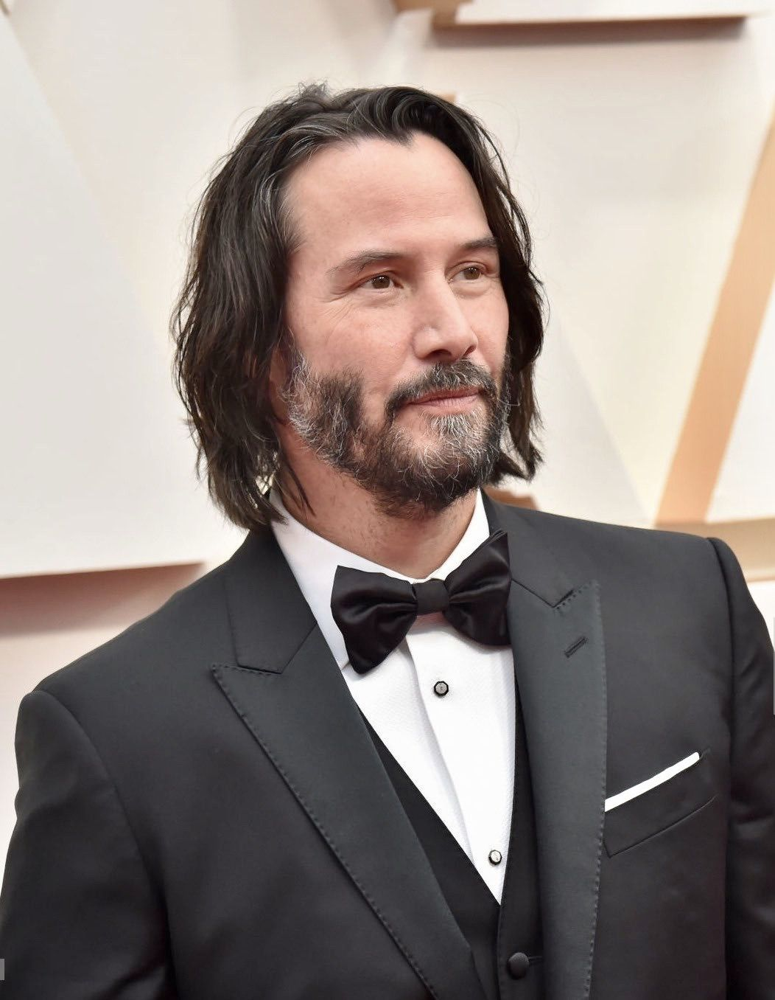
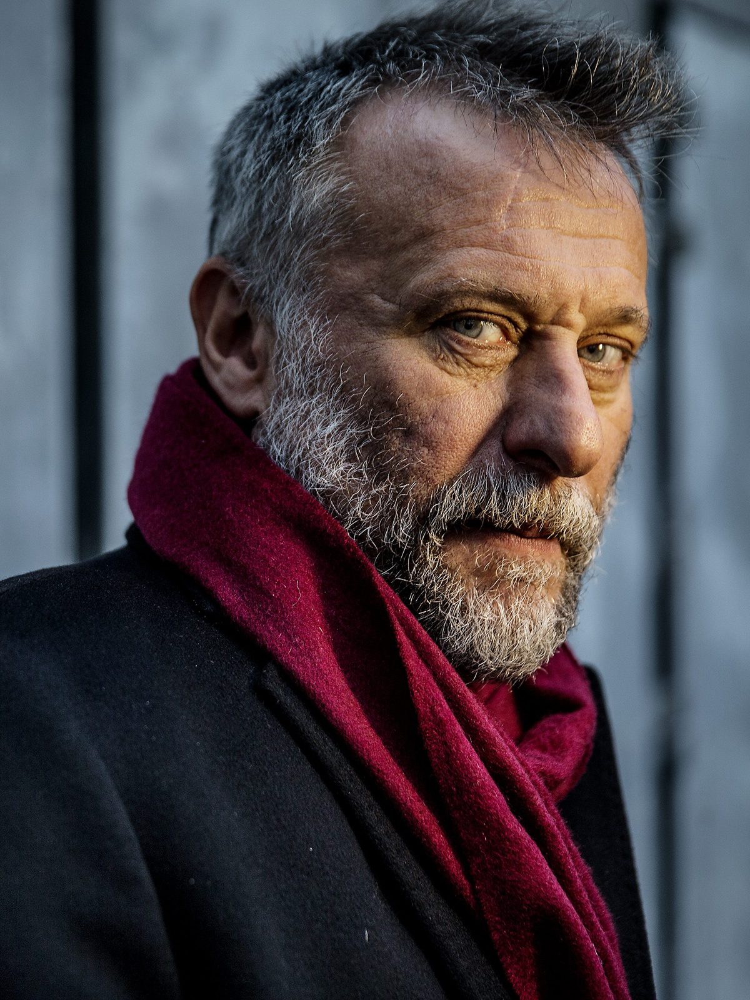

John Wick
A webpage about the movie John Wick
Keanu Reeves
Keanu Charles Reeves was born September 2, 1964 is a Canadian actor. Born in Beirut and raised in Toronto, Reeves began acting in theatre productions and in television films before making his feature film debut in Youngblood (1986).
He had his breakthrough role in the science fiction comedy Bill & Ted's Excellent Adventure (1989), and he later reprised his role in its sequels. He gained praise for playing a hustler in the independent drama My Own Private Idaho (1991), and established himself as an action hero with leading roles in Point Break (1991) and Speed (1994).
Following several box office failures, Reeves's performance in the horror film The Devil's Advocate (1997) was well received. Greater stardom came for playing Neo in the science fiction series The Matrix, beginning in 1999. He played John Constantine in Constantine (2005) and starred in the romantic drama The Lake House (2006), the science fiction thriller The Day the Earth Stood Still (2008), and the crime thriller Street Kings (2008). Following a setback, Reeves made a comeback by playing the titular assassin in the John Wick film series, beginning in 2014.
In addition to acting, Reeves has directed the film Man of Tai Chi (2013). He has played bass guitar for the band Dogstar and pursued other endeavours such as writing and philanthropy.
Information extracted from Keanu Reeves' Wikipedia page.
Michael Nvqvist
Rolf Åke Mikael Nyqvist (Swedish: [ˈnŷːkvɪst]; 8 November 1960 – 27 June 2017) was a Swedish actor. Educated at the School of Drama in Malmö, he became well known for playing police officer Banck in the 1997–1998 Martin Beck TV series and for his leading role in the 2001 film Grabben i graven bredvid. He was internationally recognized for his role as Mikael Blomkvist in the acclaimed Millennium series and as the lead villains in Mission: Impossible – Ghost Protocol (as Kurt Hendricks) and John Wick (as Viggo Tarasov). In 2004, he played the leading role in As It Is in Heaven which was nominated for Best Foreign Language Film at the 77th Academy Awards.
Nyqvist's first major role was as police officer John Banck in the first set of Beck TV series in 1997. His first big breakthrough came in 2000 with the film Together directed by Lukas Moodysson. The movie achieved great international success and earned Nyqvist his first Guldbagge Award nomination for Best Actor in a Supporting Role for his portrayal of a misguided husband with anger issues. He later played the leading man in the Swedish romantic comedy Grabben i graven bredvid for which he won a Guldbagge Award for Best Actor in Leading Role.
In 2004, he played the lead role in As It Is in Heaven as Daniel Daréus, a conductor and musician. As It Is in Heaven was nominated for an Academy Award for Best Foreign Film. In 2006, he starred in Suddenly where Nyqvist plays Lasse – a man who must come to terms with the sudden loss of his wife and son. In the 2007 film The Black Pimpernel, Nyqvist portrays Swedish ambassador to Chile, Harald Edelstam, who helped many people flee execution by dictator Augusto Pinochet during and after the 1973 Chilean coup d'état.
Nyqvist garnered international attention starring as Mikael Blomkvist in The Girl with the Dragon Tattoo (Swedish title: Män som hatar kvinnor), The Girl Who Played with Fire (Swedish title: Flickan som lekte med elden), and The Girl Who Kicked the Hornets' Nest (Swedish title: Luftslottet som sprängdes). These films were adapted from the Millennium series of novels by Stieg Larsson. He starred as a terrorist in the 2011 film, Abduction, directed by John Singleton. He was also part of the permanent ensemble at the Swedish Royal Dramatic Theatre.
Nyqvist appeared in the 2011 action thriller Mission: Impossible – Ghost Protocol, the fourth film of the series. In the film, Nyqvist portrays a madman code-named 'Cobalt', who wants to instigate a global war between Russia and the United States because he believes a war will restore ecological balance to the planet. In 2014, he appeared in John Wick as a New York Russian mob boss who is forced to protect his son from a legendary hit man played by Keanu Reeves. In a movie shot in 2017 and 2018, Nyqvist starred as Russian submarine captain Sergei Andropov in Hunter Killer. In the film he is one of only three survivors of his submarine that has been destroyed by Russian sabotage. The movie was released posthumously on 26 October 2018. He is interviewed on the DVD and Blu-ray releases; in the section on the production of the movie.
Information extracted from Michael Nvqvist's Wikipedia page.